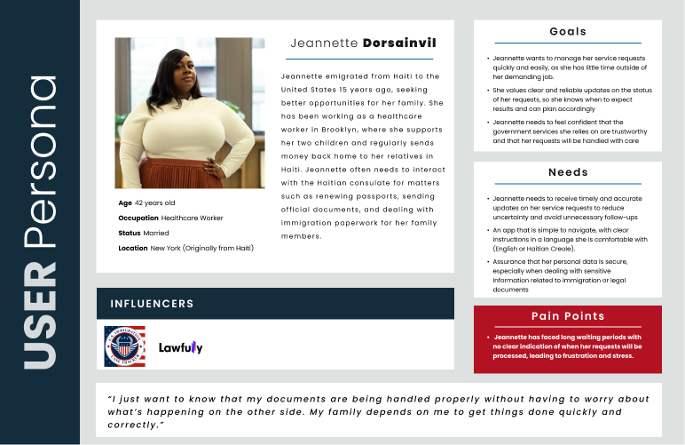
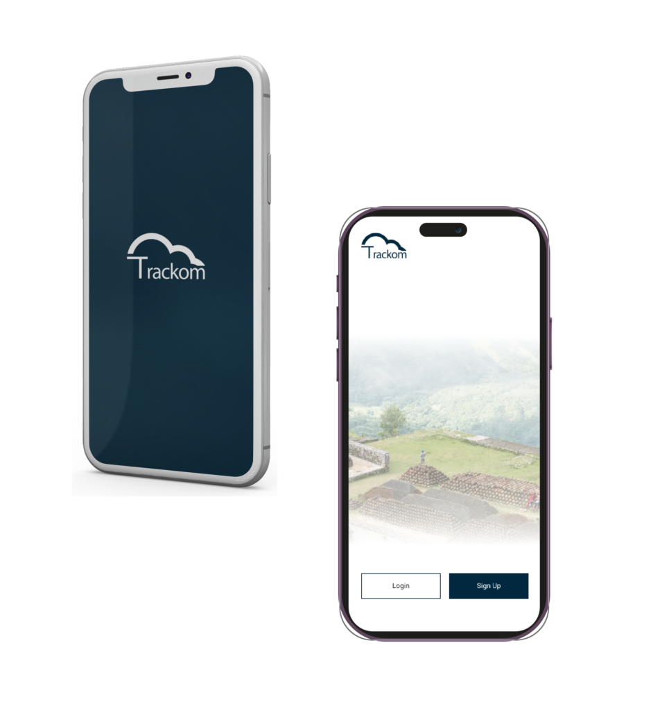

Diaspora users faced delayed responses and unclear communication while waiting for government service updates.
Case study
TRACKOM
A mobile app linked to ICOM that lets diaspora users track government service requests by receipt number, reducing uncertainty through real-time status updates and clearer communication.
I defined the user problem, persona, HMW, mid-fidelity flow, and high-fidelity mobile tracking experience.
The app centers on adding a receipt number, viewing case status, and receiving updates without extra complexity.
The prototype reduces uncertainty by giving users an understandable dashboard and real-time tracking path.

My contribution
- Defined the user problem around delayed responses, unclear communication, and loss of trust in service delivery.
- Created the persona and HMW statement around diaspora users who need clarity on government service requests.
- Designed mid-fidelity and high-fidelity mobile prototypes centered on dashboard visibility, case tracking, and notifications.
Challenge
The relationship between the government and the diaspora community had been strained by delayed responses, unclear communication, and a lack of transparency around service requests.
Users like Jeannette Dorsainvil needed a reliable way to know where their case stood, receive timely updates, and feel confident that their request was being handled.
Approach
- Defined a user persona around diaspora members who experience long processing times and poor visibility into requests.
- Framed the HMW around helping users track service requests through a simple, transparent mobile experience.
- Designed a mid-fidelity prototype focused on adding a case, viewing real-time status updates, and receiving notifications.
- Refined the high-fidelity prototype with a dashboard, clear navigation, and accessible tracking information.
Process evidence



Design decisions
Users can track the status of a service request using a receipt number linked to their case.
Status updates and notifications reduce uncertainty and make the process feel more transparent.
The interface prioritizes clarity so users can manage requests without unnecessary steps.
Selected final screens
Outcome
The high-fidelity prototype addresses the need for a more transparent and efficient system for managing government service requests.
By combining clear communication, real-time updates, and a user-friendly interface, the app aims to rebuild trust between the government and the Haitian diaspora.
- Gave users a clear way to track requests with a receipt number instead of waiting without visibility.
- Reduced uncertainty by surfacing real-time status updates and notification moments.
- Created a mobile flow that supports confidence, transparency, and easier case management.